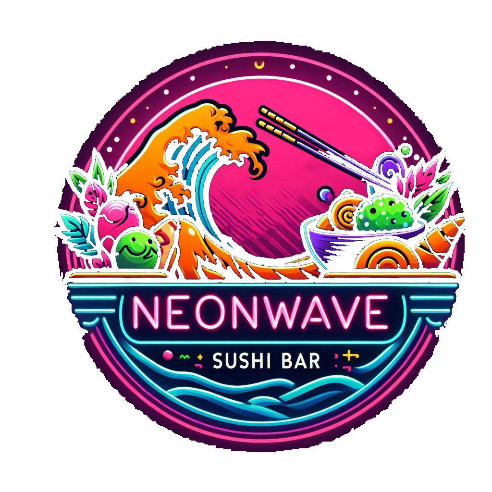

Menu Neonwaves
El Sushi Con Estilo y Sabor Brillante!
Sopa Miso
es una pasta fermentada elaborada a base de soja y sal marina. La fermentación es posible gracias a la acción del hongo koji.
$250 mxn

Noodles Especiales Neon
Es un concentrado de gambas que se sala, se fermenta y se seca al sol. Se usa como saborizante, tiene un potente sabor a marisco y con una pequeña cantidad que aportemos a nuestro caldo o sopa.
$300 mxn
Temaki
piezas de sushi con forma de cono de alga nori rellenas de arroz y diferentes ingredientes.
$150 mxn
Tempura
es un rebozado muy fino y crujiente. La masa de la tempura se prepara con harina, huevo y agua helada.
$100 mxn
Nigiri
sushi compuesto por una bola de arroz que se moldea con la mano sobre la que se sirve un trozo de pescado crudo finamente fileteado u otros ingredientes como pulpo cocido, anguila o tortilla.
$350 mxn
Maki
El arroz de sushi está recubierto por el alga nori que va por fuera y normalmente suele llevar un ingrediente, aunque también se puede rellenar con dos o tres ingredientes en pequeña cantidad.
$200 mxn